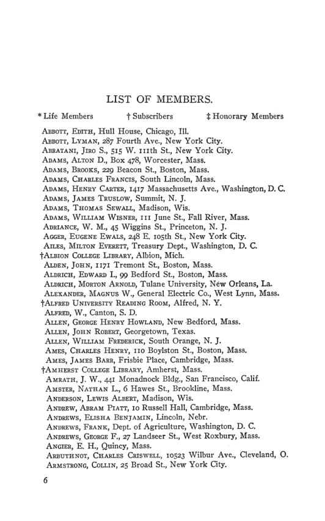

O manual de 1909: 1.030 sócios, caixa em queda e um déficit previsto
Leitura: 5 min
O manual de 1909 traz o estatuto, a lista de sócios e as atas de Atlantic City: anuidades em alta, caixa em queda, um déficit anual previsto e a decisão de manter o Quarterly e o boletim.


Em 28 de dezembro de 1908, em Atlantic City, o tesoureiro W. M. Daniels incluiu no seu último relatório uma previsão. Mantidos o Quarterly e o Economic Bulletin, sem aumento de anuidade e sem um crescimento muito grande do quadro de sócios, a receita anual estimada seria de US$ 3.600, e o déficit, de US$ 1.800 por ano.
As contas estão no Hand Book of the American Economic Association de julho de 1909, suplemento do nº 2 do vol. 10 da terceira série. A estrutura é a do manual de 1908, comentado no nº 87: propósitos da associação, estatuto, lista de sócios e atas da vigésima primeira reunião anual. A capa já traz o título American Economic Association Quarterly, com a nota de que a série saía antes como Publications. Para 1909, a associação tinha Davis R. Dewey, do Massachusetts Institute of Technology, como presidente e T. N. Carver, de Harvard, como secretário e tesoureiro.
Quantos eram os sócios?
Em 22 de dezembro de 1908, o quadro somava 1.030 nomes: 868 sócios e 162 assinantes. No manual anterior eram 1.002. O secretário registrava ainda 16 assinantes avulsos do boletim e lembrava que o editor provavelmente tinha outros em sua própria lista.
Para onde foi o dinheiro?
A receita de anuidades voltou a subir: US$ 2.442,37 em 1908, US$ 599,77 acima do ano anterior e a maior dos cinco anos desde 1904. Daniels avisou que o resultado não se repetiria. Mais de US$ 504 eram anuidades atrasadas, cobradas por um esforço incomum do escritório, e o que restava a cobrar era provavelmente desprezível.
O que o tesoureiro propôs?
Para Daniels, a monografia trimestral regular deveria parar imediatamente. O relatório da reunião anual continuaria a ser impresso, talvez como número extra do boletim, e a verba liberada iria para o próprio boletim. O argumento vinha do estoque encalhado: as monografias realmente valiosas se esgotavam depressa.
“mais de dois terços das nossas monografias não têm interesse apreciável para os nossos próprios sócios” (“over two-thirds of our monographs are of no appreciable interest to our own members”)
O tesoureiro também pediu, ao deixar o cargo, que o posto de secretário e tesoureiro passasse a ser remunerado. A associação agora era editora de si mesma: no começo de 1908 liberara a Macmillan do contrato de edição, assumira o estoque, os envios e a contabilidade, e mudara o título da série para American Economic Association Quarterly, por exigência do correio, para manter a tarifa postal de segunda classe.
O que se decidiu em Atlantic City?
Uma comissão presidida por E. R. A. Seligman respondeu às propostas em 30 de dezembro. A assembleia manteve o boletim e o Quarterly, mas autorizou o Comitê Executivo e o Comitê de Publicações a reduzir o volume de material, com a garantia de publicar as atas na íntegra. Criou uma comissão de cinco para ampliar o quadro de sócios e decidiu que o cargo de secretário continuaria honorífico, com verba ampla para auxílio administrativo. Uma emenda de David Kinley levou a questão de ampliar o boletim e unificar as publicações a uma comissão de nove, com relatório na reunião seguinte.
O Comitê Executivo recusara, durante o ano, indicar representantes para colaborar com a League for the Preservation of National Resources, por não querer comprometer uma associação científica com propaganda. A reunião de 1909 seria em Nova York, junto com a American Historical Association, e ali se comemoraria o vigésimo quinto aniversário da fundação. Os trabalhos apresentados em Atlantic City, do discurso presidencial de Simon N. Patten sobre a produção da literatura econômica ao debate sobre um banco central, estão comentados no nº 96.
Na minha leitura
Na minha leitura, o relatório de Daniels é um exercício raro de projeção de caixa numa entidade sem fins lucrativos. Ele separa a receita recorrente da extraordinária, recusando-se a contar duas vezes com os atrasados, e mostra que o novo serviço, o boletim, respondeu pela maior parte de uma despesa que quase dobrou, sem receita equivalente. A assembleia escolheu manter os dois produtos e cortar volume, em vez de suprimir um deles. É a resposta clássica de quem aposta que a demanda virá depois da oferta, e o próprio manual registra o risco que ela carrega.
Glossário
- Assinante (subscriber)
- instituição ou pessoa que recebe as publicações sem ser sócia, como as bibliotecas.
- Anuidades atrasadas (arrears)
- contribuições de anos anteriores cobradas no ano corrente; receita que não se repete.
- Tarifa postal de segunda classe
- tarifa reduzida do correio americano para periódicos, que exigia regularidade e, no caso do boletim, vedava anúncios.
- Comitê Executivo
- órgão que cuida dos interesses da associação entre as reuniões anuais.
Artigos desta edição
- American Economic Association — texto institucional (pp. 1–2). Apresenta a associação como reunião de professores de economia de todas as universidades e das principais faculdades, ao lado de homens de negócios, jornalistas, advogados e políticos, com quase duzentos assinantes, entre eles as principais bibliotecas do país. Lembra as reuniões conjuntas com a American Historical Association e outras sociedades, anuncia Nova York como sede de 1909 e resume o histórico das publicações desde março de 1886, incluindo agora o Economic Bulletin, trimestral, dedicado a bibliografia e notas. Reafirma que a associação não é órgão de partido, seita ou instituição e que seus dirigentes e colaboradores não são remunerados. JSTOR
- Constitution of the American Economic Association — texto revisto na reunião anual de dezembro de 1905 (pp. 3–5). Mesmo texto dos manuais anteriores: incentivo à pesquisa econômica, em especial ao estudo histórico e estatístico das condições reais da vida industrial, publicações e plena liberdade de discussão, sem posição partidária. Anuidade de três dólares, contribuição vitalícia de cinquenta e até 25 sócios honorários estrangeiros. Define os cargos, o Comitê Executivo, com quórum de cinco membros, e o Comitê de Publicações. JSTOR
- List of Members (pp. 6–33). Relação alfabética de sócios e assinantes, com endereços e sinais para sócios vitalícios, assinantes e honorários. Bibliotecas de faculdades aparecem ao lado de professores, funcionários públicos e profissionais liberais. Uma errata avulsa corrige a lista. JSTOR
- The Twenty-First Annual Meeting — atas; relatórios de W. M. Daniels e E. W. Kemmerer (pp. 34–59). Atas da reunião de Atlantic City, de 28 a 31 de dezembro de 1908, com sessões conjuntas com a American Association for Labor Legislation e a American Sociological Society: lista de presença, programa, relatórios do secretário, do tesoureiro e do editor do boletim, o parecer da comissão de auditoria, a resposta às propostas do tesoureiro, a criação das comissões de cinco e de nove e a eleição de Davis R. Dewey para a presidência. O editor relata que o boletim saiu com quatro números entre junho e meados de dezembro, com uma equipe de 23 editores. Os trabalhos apresentados estão comentados no nº 96. JSTOR
Fontes
- American Economic Association (pp. 1–2). JSTOR · Internet Archive (PDF)
- Constitution of the American Economic Association (pp. 3–5). JSTOR · Internet Archive (PDF)
- List of Members (pp. 6–33). JSTOR · Internet Archive (PDF)
- The Twenty-First Annual Meeting (pp. 34–59). JSTOR · Internet Archive (PDF)
- Sumário da edição no JSTOR: American Economic Association Quarterly, 3ª série, vol. 10, nº 2.
Documento em domínio público (EUA, publicado antes de 1931), via JSTOR Early Journal Content e Internet Archive. Resumo e comentário do autor deste site, sem afiliação com a American Economic Association. Encontrou um erro? Escreva: a correção é publicada no próprio texto, com data.
← Nº 97 · O Bulletin de abril de 1909: 142 teses, ferrovias e moeda Nº 99 · O Bulletin de junho de 1909: desemprego, salários e estatística →